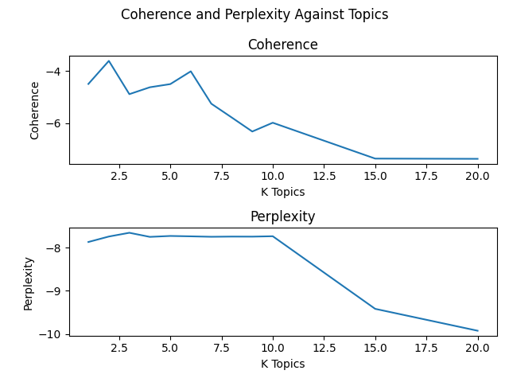

PartB Unsupervised Learning
Motivation
In this part of the project our goal was to use Latent Dirichlet Allocation to "cluster" or create topcis which aggregate the documents in the dataset together for analysis.
Motivation for the work in this section was to understand how to be use a topic model to extract a useful feature to then be able to fuel the classifier in Part A of this project. In doing so more information can be gleaned from understanding word pairings and probabilities distributions of documents to derived topics. More analysis is needed to use the topic as a feature for the binary classifier in Part A. This is discussed in the Stretch Goals on how this could have been accomplished.
Data Source
The sources for this data were provided by the instruction team for SIADS694 and SIADS695. Details on the dataset can be found in the kaggle competition. The dataset was downloaded using the kaggle dowloader python tool from the kaggle competition website. The dataset consisted of a few different files that were designed to be used as potential features for PartA. For PartB however we only needed to use the csv files with the sentences in them. Those files are named 'WikiLarge_Test.csv' and 'WikiLarge_Train.csv'. In the 'WikiLarge_Train.csv' there are two columns one called 'original_text' and one called 'label'. Original text is a string representing the document and label is its classification as an integer (0,1) as either 'does NOT need to be simplified' or 'does need to be simplified'. * 'WikiLarge_Train.csv' has 416,768 documents in the corpus (labeled) * 'WikiLarge_Test.csv' has 119,092 documents in the corpus (unlabeled)
Unsupervised Learning Methods
Our main goal here was to process the training documents to extract feature representations for PartA. Given time constraints this goal was not achieved fully. However it did yield some interesting findings going through the effort. It was a great challenge engineering wise working with a large dataset and performing some of the analysis needed to extract topics using LDA. Model tuning and other processing steps came at somewhat of a premium as well given how long it takes to make some of the steps.
Source Code Workflow
The methodology was similar to most Natural Language Processing tasks. There is a fairly discrete high level pipeline with potential modifications at each step that are dependent on the task at hand. Starting with the high level architecture. Given the amount of time spent coding and recoding or pickling objects a set of utilities were built in the form of a python package or library. It is title m2lib and is in the main project directory. It houses the picklers, preprocessors, featureizers, and model creating code.
Pickling
An important note here is that at each step instead of re-performing each sub step in the process great effort was taken to ensure that repeating the process was not necessary. Custom classes were built such that when inherited from they could check for presence of a pickle corresponding to the child class before initializing the object. This meant the whole class (object) would get serialized and deserialized automatically on init. Which isn't always desireable given that those classes may change when you are developing. So some work is needed to refine the architecture. A shortcut was taken to create a separate picklable object that could store the important output of each step. In the cases encountered here it was typically 5 types.
- Preprocessed tokens example
# tokens
['the', 'car', 'was', 'fast']
#ngamrms (bigrams)
['the_car', 'car_was', 'was_fast']
# full token token + bigram
['the', 'car', 'was', 'fast', 'the_car', 'car_was', 'was_fast']
- Featureized Tokens
# bag of words (id, count)
[(13, 1), (53, 3), (18, 4), (52, 3)]
#TFID vectors
[[[(0, 1), (1, 1), (2, 2), (3, 1), (4, 1), (5, 1), (6, 1), (7, 1), (8, 2), (9, 1), (10, 1), (11, 1), (12, 1), (13, 1), (14, 1), (15, 1), (16, 1)]]
['addition', 'anna', 'austen', 'continued', 'continued_work']
# dictionary (gensim utils)
- Models (objects)
- HTML (charts)
- Native Python objects
Basic Pipeline Steps
- Read data
- Preprocess (tokenize, lemmatize, stopwords, punctuation removal, etc)
- Create feature representations (Bag of words, vectors)
- Create Model
- Analyze Model
- Visualize
Overview
Step 1 we are reading the data into memory using pandas read from csv functionality. Its not a particular costly process and can be done quickly. Still a class was created to handle reading and accessing dataframes and original data then serialized to pickle.
Step 2 is preprocessing it was done mostly with gensim preprocessing classes that were very useful and comprehensible. SpaCy was a bit more difficult to fit into the design without going to far into their architecture. However given that is has some very advanced techniques for processing data it will be considered for future use. Their pre built pipelines are supposed to be fast and intelligent.
Tokenizing code. As you can see two popular steps for tokenizing were left out which is stripping short tokens and stemming text. This decision was made for cleanliness of output from LDA model having legible words.
def tokenize_gensim_string(self, doc):
CUSTOM_FILTERS = [
strip_tags,
strip_punctuation,
strip_multiple_whitespaces,
strip_numeric,
remove_stopwords,
# strip_short,
# stem_text
]
doc_ = preprocess_string(doc, CUSTOM_FILTERS)
return doc_
Step 3 Creating feature representation was also done with gensim using the bag of words model and TFID model. Each of which produce their own object representations as output that can be used for LDA model creation. See gensim tfidmodel and doc2bow
Step 4 Creating models again was another task covered by gensim. LDA Model It's one of the more widely used for LDA and has tons of support. A model was created with bag of words and tfid to compare the differences in the two. A third model was created using Gibbs Sampling Dirichlet Multinomial Mixture which is supposed to be better at topic modeling for short texts. It is also known as the Movie Group Process. Described in this medium post.
Step 5 Analyzing the models was done with using two metrics perplexity and coherence measures using gensim's LDA model attributes and methods.
Step 6 Visualizations were done primarily with PyLDAvis. It can hook right into the model and provide insight into the 2D cluster structure of the topic model.
Parameter Tuning
The next section discusses a little in more detail on evaluation and how it impacted parameter tuning. There were few parameters to tune that had meaningful effects on the outcomes. The most impactful parameter is by far the number of K topics selected for each topic model (LDA, GSDMM).
- For bag of words feature there are some parameters to filter out extreme values from the dataset that are either lower or higher in instance count.
- LDA model has a few parameters that can be tuned most were left default.
self.lda_args = {
'chunksize': 2000,
'alpha' : 'auto',
'eta': 'auto',
'iterations' : 50,
'num_topics' : 10, # K
'passes' : 20,
'eval_every' : None,
# 'workers' : 3,
}
- To include or not include ngrams? That question was difficult to answer with higher order ngrams your doc term matrix ends up being very sparse. So I split the middle and went with only 2 ngram model. Once this was selected it remained stationary for the project as running the bag of words model was costly.
Unsupervised Evaluation and Parameter Tuning
Evaluation was done at a few levels in the basic pipeline described above for picking some of the parameters and hyperparameters. However the largest amount of effort went into evaluating perplexity and coherence. Higher coherence is better and lower perplexity is better. Given time constraints only a few runs were made at trying to select an ideal K number of topics.
The algorithm performed was to iterate through 12 topic sizes [1,2,3,4,5,6,7,8,9,10,15,20] to then calculate perplexity and coherence and optimize the topic selection based on the outcomes. This was performed on a 20% portion of the whole training set to reduce time waiting for bag of words as well as each LDA model training. The results yielded the below chart of coherence and perplexity. Given the results were on a smaller dataset coherence results were untrustworthy. It was deemed appropriate that choosing anywhere between 5 and 10 topics would suffice.

Below is a K = 10 pyLDAvis chart showing some of the clusters and details about words or topics in those clusters which can be explored. An interesting thing to note is that some of the topics are ambiguous and should have likely been removed in the preprocessing step. Further work into tuning the preprocessing step may build better results.
Discussion
There were several learnings from this project. One of the greatest is that large datasets are very difficult and time consuming to running analysis on. The gensim implementation of bag of words calculation took 10+ hours to complete on the final run. So pickling was a high priority in order to prevent from having to re run the pipeline steps for testing.
The solution has several opportunities for expansion one mentioned in the section for stretch goals. Second the project overall could be integrated partA and partB in order to build a toolset that can run a full semisupervised pipeline with feature enhancements using topics. Lastly expand the pipeline, class structure, and architecture to allow for configurability of each step and automate parameter selection.
This project had very little ethical concerns in my consideration given that the binary classifier is making a suggestion to modify sentences based on level of difficulty. That seems free of ethical concern. Every ML model has implications on human beings so depending on how this model is used it could have an ethical dilemma. For instance if a publishing house is using the model to analyze unpublished books and making decisions about revisions guided by the model. It would be considered unethical to use a model with bias to make these decisions.